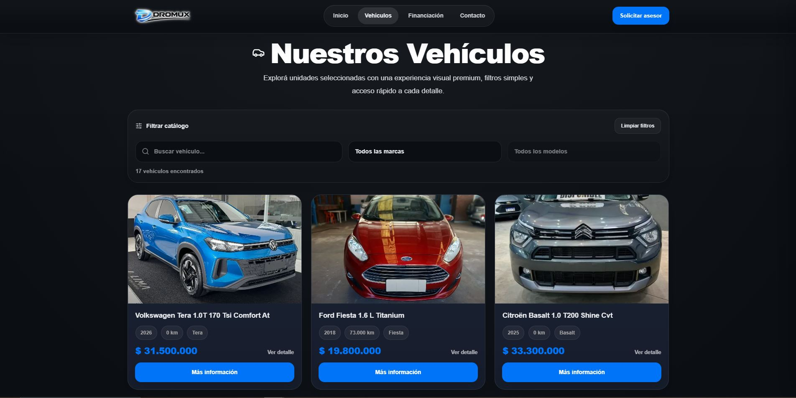
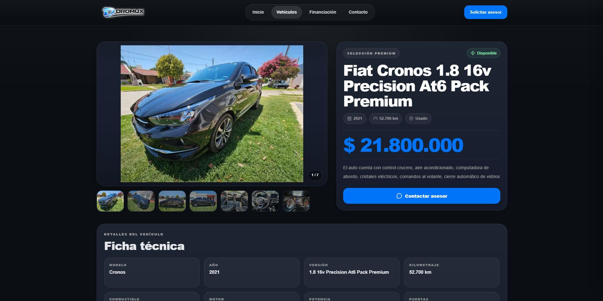

01
Cargás el vehículo
Ingresás los datos de la unidad dentro de Dromux y administrás allí su información.
Mostrá tus vehículos con una web profesional sin volver a cargar el stock en otro lugar. Con Dromux administrás la concesionaria y su vidriera digital desde una misma plataforma.

Cuando una web está separada del sistema, cada vehículo nuevo, cambio de precio o venta obliga a actualizar información en más de un lugar. Dromux conecta ambas partes.
Ingresás los datos de la unidad dentro de Dromux y administrás allí su información.
La unidad queda disponible en el catálogo público sin tener que volver a escribir toda la ficha.
El visitante encuentra el vehículo y puede contactarte rápidamente desde la misma publicación.
La operación sigue dentro del ecosistema Dromux, manteniendo información y stock ordenados.
La página pública pone al vehículo en primer plano: catálogo, fotografías, precio, características y acceso directo al contacto comercial. El diseño puede adaptarse a la identidad de tu concesionaria para que el cliente vea tu marca, no la de un proveedor de software.

No necesitás administrar un CMS por separado ni depender de un catálogo desconectado de tu operación diaria.
Mostrá las unidades disponibles con fotografías, precio y características organizadas.
Cada publicación tiene su propia página para presentar mejor la unidad y facilitar la consulta.
Estructura semántica, URLs claras y contenido rastreable para construir visibilidad orgánica.
La navegación se adapta a escritorio, tablet y celular sin mantener versiones separadas.
Acercá el contacto comercial al vehículo que el potencial cliente está mirando.
Presentá ubicación, horarios, medios de contacto y redes de la concesionaria.
Logo, colores e identidad visual alineados con la imagen de tu negocio.
Podés trabajar con una dirección web propia para fortalecer la presencia de tu concesionaria.
El valor no está solamente en que el sitio se vea bien. Está en evitar que la información comercial viva separada del inventario y del trabajo interno de la agencia.
Conocer el software de gestiónDromux entrega una base técnica orientada a buscadores: páginas rastreables, títulos y descripciones, estructura de encabezados, URLs claras, contenido legible y fichas individuales de vehículos. Eso crea una base para trabajar el posicionamiento de tu concesionaria en Google.
El SEO no garantiza una posición específica: depende también de competencia, contenido, autoridad, ubicación y evolución del sitio.
Está pensada para negocios automotores que quieren profesionalizar su presencia online sin sumar trabajo administrativo.
Para publicar stock y mantener una vidriera digital propia.
Para integrar presencia digital con procesos comerciales y administrativos.
Para compartir un catálogo actualizado y dirigir consultas al equipo comercial.
Para dejar atrás publicaciones aisladas y construir un activo digital propio.
Estas son algunas de las dudas más comunes cuando una agencia evalúa pasar de redes sociales o una web aislada a un sitio integrado con su sistema.
Ver todas las preguntasNo. La idea de la integración es administrar la unidad desde Dromux y utilizar esa misma información para su publicación en la web.
Sí. El diseño es responsive para adaptarse a distintos tamaños de pantalla, algo especialmente importante porque gran parte de la búsqueda de vehículos ocurre desde dispositivos móviles.
Sí. La implementación puede trabajar con dominio propio para que la dirección y la marca sean las de tu negocio.
La web puede adaptarse visualmente con logo, colores, información comercial y una estética acorde a la identidad del concesionario.
No. La web puede estar técnicamente preparada para SEO, pero el posicionamiento depende de muchos factores y se construye con el tiempo. Preferimos plantearlo de forma transparente.
Conocé cómo Dromux conecta el stock, la operación interna y la presencia digital de tu agencia.